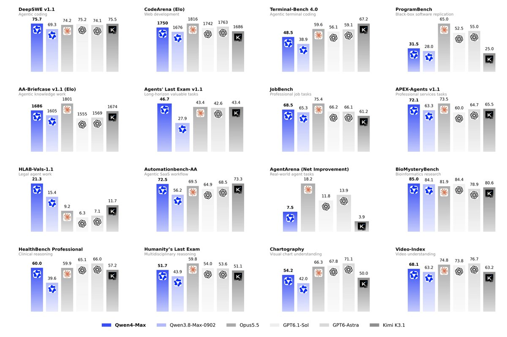
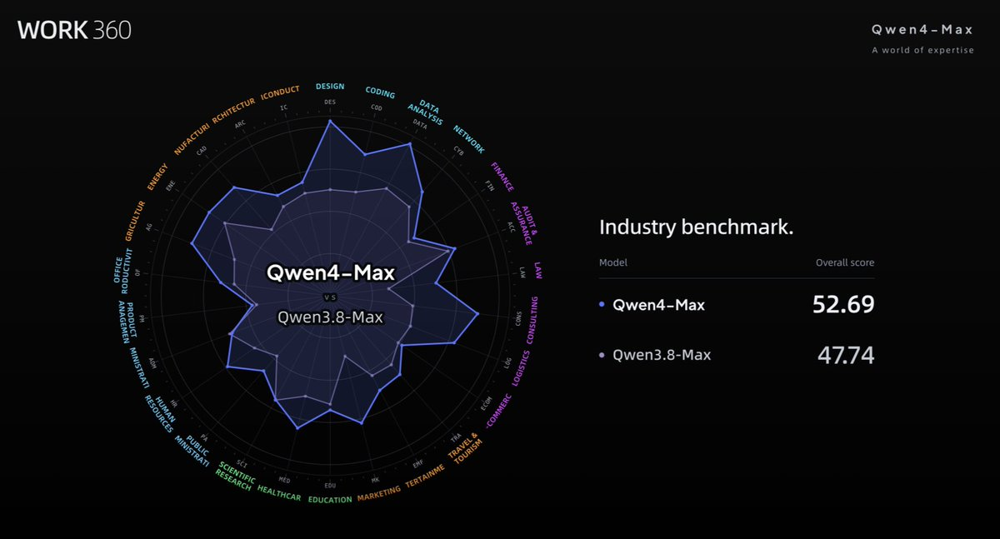
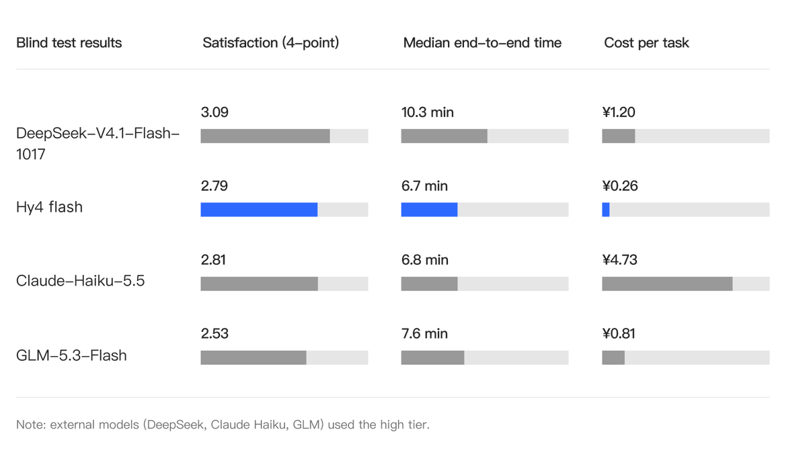
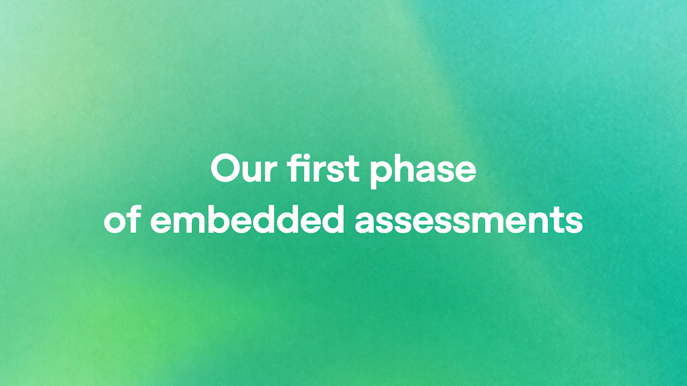
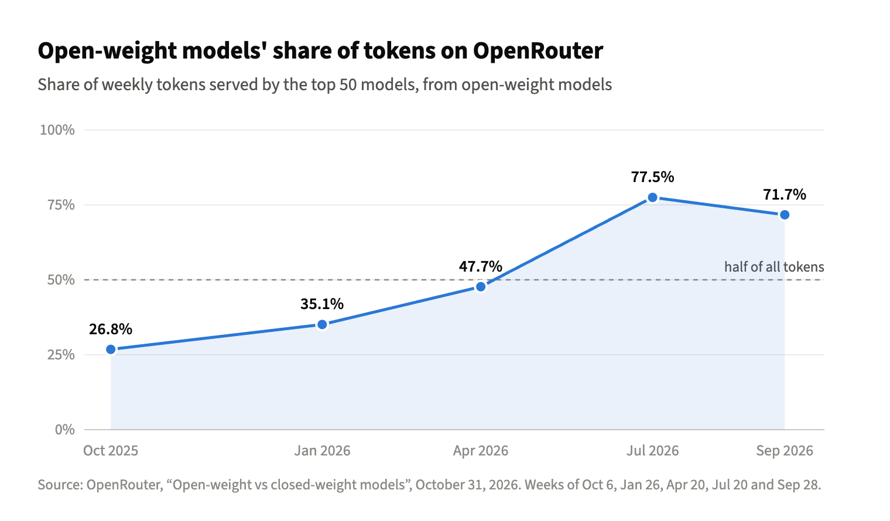
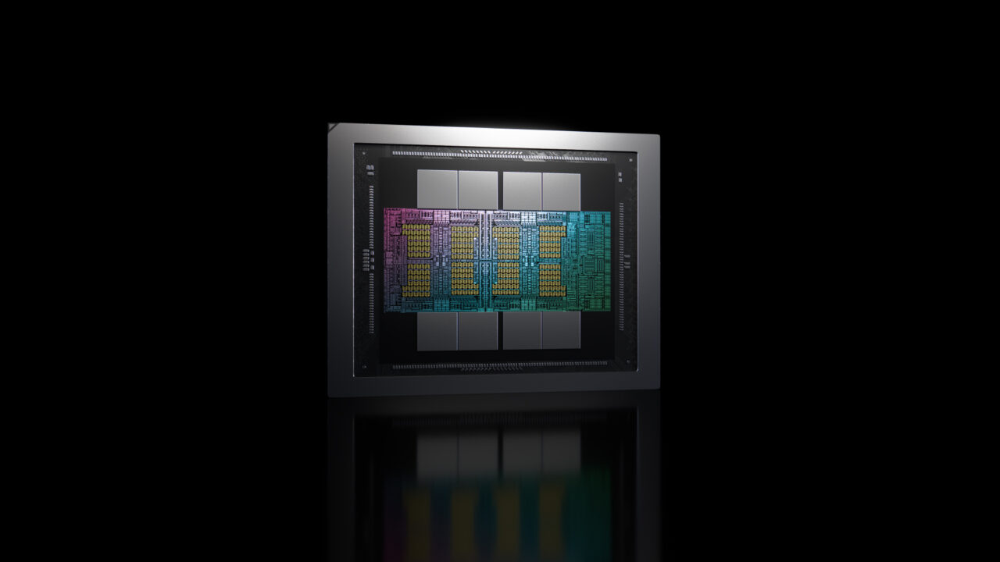

AI Intelligence Daily · 2026-11-17（周二）
统计窗口：2026-11-16 08:00 → 2026-11-17 08:00（上海 / Asia/Shanghai）· 事实与判断分区 · 国内/国际双轨 · Daily 11-15、11-16 未出站，最近完整日报停在 11-14；最近快讯为 11-14 09:28 Cursor RCA，其后快讯亦未出站。本报主窗如上；对 11-14 11:20 CST 之后、主窗之前的功能发船作「补收」，不与主窗新事件混写时刻。· 主窗一线 Desktop/Work 功能发船 desktop_shipping = 3（MiniMax Code 3.1.16 · 讯飞 WinWork V1.1.25 · 小艺 Work 0.7.7）· 补收 desktop_shipping = 2（千问办公 2.1.0 · Qwen Code 0.27.4 / desktop-v0.27.4）· 不计新 shipping：Qoder 0.5.12/0.5.13（Everyday Polish）· Factory 1.12.0/1.12.1（改进与修复）· Antigravity CLI 1.5.9（251：C/run-workflow 对所有人开放）· Claude Code 2.1.326（Desktop 仍 v5.11492.5 / bundled 2.1.325）· Codex latest 仍 0.169.0（alpha 0.171.0-alpha.10）· Copilot CLI latest 仍 1.0.112（prerelease 1.0.113-0）· CodeBuddy 2.184.0 · Kimi CLI 2.6.2 / Desktop 英文 changelog 顶条仍见 1.3.3（11-13 已报 1.3.4，本轮不断言撤回）· ZCode changelog 仍 3.18.2、自动更新是否已对齐 3.18.2 未证实 · OpenCode v2.3.0 · MCP servers v2.4.0 · VS Code 1.146.0 · StepCode 0.1.7 · agent-desktop 1.3.1 · dsh latest 仍 0.2.2-rc.1 · Cursor changelog 仍 Nov 6。npm 对照见信源附录。★（约 08:13:17 CST，相对 Daily 11-14 约 08:13 CST，约 72 小时而非单日）：chat-demo **4,054**（+3,386）· deepseek-harness **282,332**（+1,840）· agent-desktop **24,602**（+1,319）· agent-browser **52,012**（+1,300）· opencode **227,317**（+645）· codex-security **13,764**（+642）· dsh-superagent-prototype **23,491**（+474）· DeepInfer **26,114**（+150）· servers **92,054**（+78，仍 v2.4.0）· code-verification **262**（+31）C
今日一句话判断
国产旗舰从预览切到正式价，日常工作则被做成更便宜的 flash 档：Qwen4-Max 在 11-16 以 API 标价 $1.5 / $4.5 和人民币 10 / 30 元取代 Preview，Hy4 flash 则以目录价 0.5 / 2 元、11-30 前五折进入 TokenHub、元宝，并即将登上 OpenRouter。B 同一统计窗里，OpenAI 把 computer-use 写进可配置审批与审计日志的医疗工作流，并把 Apollo、METR、Transluce、Goodfire 嵌入内部评估；Anthropic 则把协调披露窗口从 90 天收到 30 / 45 天。主窗 desktop_shipping=3B，补收再计千问办公 2.1.0 与 Qwen Code 0.27.4。NVIDIA 财报书面点评要到 11-18 05:20 CST 前后才会见，本窗官方人事仍无后续。
专栏一｜新闻
本栏结构：
- 国内/双边头条：Qwen4-Max 正式发布B（Preview 升格为旗舰；UPDATE 233B）
- 国内头条：腾讯混元 Hy4 flashB（日常工作档 + TokenHub 定价与限时五折；官方长文已核）
- 国际中栏：OpenAI 医疗团队 computer-useB（GPT-6 Astra 测评 + 可配置审批/审计）
- 国际中栏：OpenAI embedded assessmentsB（Apollo / METR / Transluce / Goodfire）
- 国际中栏：Hugging Face × OpenRouter（Inference Providers 改由 OpenRouter 路由）
- 国内中栏：MiniMax Code Desktop 3.1.16B（desktop_shippingB，Win/Mac/changelog 对齐）
- 国内中栏（补收）：千问办公 2.1.0B（Qwen4-Max 首发接入 + 钉钉 AIhub MCP；desktop_shippingB）
- 国际中栏：Anthropic 缩短协调漏洞披露时限
- 国际中栏：Claude Code 桌面 iPhone Duo 模拟器公测 + 官方 Xcode 插件
- 国内中栏：讯飞 WinWork V1.1.25B（desktop_shippingB，UPDATE 253B）
- 短讯：NVIDIA SC26 产品集群、Qwen Code 0.27.4、小艺 Work 0.7.7、Antigravity CLI 1.5.9、Claude Code 2.1.326、Factory 1.12.0、Copilot 模型 11-16 退役、CloudRobo-WM1.2 等
排序依据：重要度 → 与两条主线的相关性 → 时效。Qwen4-Max 是预览窗收束后的正式价格与产品入口；Hy4 flash 把「日常工作」写成可运营的低价档。医疗 computer-use 与嵌入式评估，分别落在 Runtime 权限/审计和 Trust 治理；HF×OpenRouter 则改写开源权重的默认推理入口。
1. 阿里巴巴正式发布 Qwen4-Max：Preview 收束为旗舰，API 与办公/IDE 同步开放
强A · UPDATE 233 · 双边 · A/I/C · 主窗 · 非 Desktop 新版本（办公客户端见第 7 条）C
发生时间：@Alibaba_Qwen 主帖 2026-11-16 02:01:55Z（10:01:55 CST）B；阿里云新闻稿标注 November 16, 2026B；百炼「新发布模型」条目日期 2026-11-16B；帮助页可见 2026-11-16T09:35:12+08:00C 与 2026-11-16T17:28:58+08:00C。@qoder_ai_ide 于 03:11:13Z 宣布 Day-0 上线，12:10:27Z 写明「Qwen4-Max-Preview has been upgraded to Qwen4-Max。」
发生了什么
这不是 11-11 那条 Preview 的重复报道。官方把 Qwen4-Max 从 Token Plan 预览档升格为正式旗舰：新的 MoE 架构、原生视觉、1MB 上下文，已在 QwenCloud 提供 API，并进入 Qwen Studio、QwenWork、Qoder。阿里云新闻稿写明总参数 2.4 trillionB，每 token 激活 71 billionB，称在同一 2.4T 规模下激活参数比 Qwen3.8-Max 少 25%B。API 标价（官方 X 与 QwenCloud 模型页一致）为 $1.5 / 1M 输入、$4.5 / 1M 输出、$0.075 / 1M implicit cacheB；显式缓存为 5 分钟创建 $1.875、1 小时创建 $3、读取 $0.075。百炼人民币单价（非思考和思考模式，0<Token≤1M）：华北 2（北京）及多数「全球」区域 输入 10 元 / 输出 30 元 / 百万 TokenB，新加坡「国际」为 10.938 / 32.813 元；北京列有 100 万 Token 免费额度（90 天窗口）。官方称相对 Qwen3.8-Max，内部评测最多约 50% 更少 token，单任务平均成本下降超过 60%；自建 Work360 框架分层 taxonomy 为 26 / 182 / 721，基准分 52.69，约高出上一代 10%，单任务平均成本由 $4.43 降至 $1.67。新闻稿还提到 Code Arena 第 6，以及云资源调度、制造编程耗时和 48 小时科研闭环等厂商自述，这里只作官方叙述，不升格为独立评测结论。更小尺寸的 Qwen4 开源权重被预告「将发布」，本窗未见权重仓更新。
我的判断
判断：11-11 的 Preview 把模型送进了 Token Plan 和办公/编程产品，今天的变化是价格、接口和产品名称一起转正B。Qoder 官方直接写 Preview「已被升级为 Max」，不要再把当前可调用档写成仅预览，也不要另开一条与 233 无关的新模型新闻。成本叙事是官方主线：更少激活参数、更低 cache 价、以及 Work360 / Terminal-Bench 上的内部对照。这对 Agent 运行成本有即时含义，但 Work360 是自建框架，引用时必须标明来源，不能写成第三方榜首。
未来影响
若正式价和办公/IDE Day-0 能稳住，国产旗舰的竞争口径会更多转向「单任务成本 + 长程交付」，而不只是公开榜。开源权重若按预告放出，会影响开源档与闭源旗舰的分工；在权重实际出现前，只把它记为官方下一步，而不是已经发生的开源事件。
对智能体互联网
无新的跨厂商协议。官方把 Max 同时接到云 API、Studio、办公客户端和 IDE，说明同一模型要在多套 Runtime 里被发现和计费，但发现机制仍是各产品自己的模型目录。
对 Work / Agent 引擎
值得对照的是「预览→正式」时目录、价格和默认模型如何切换，以及 1M 上下文 + 原生视觉对长程办公 Agent 的输入面。真正的客户端变化在补收的千问办公 2.1.0。
值得进一步做什么
1. 对照 QwenCloud / 百炼文档，记下缓存、思考档和 TPM 限制，避免沿用 Preview 折扣口径。
2. 跟踪较小尺寸 Qwen4 开源权重是否真正上架。
3. 在自研评测集上抽样，而不是直接采用 Work360 分数。
配图
见图 1（官方 X 主公告图，来源页 Alibaba_Qwen 主帖L）。另见图 2（官方线程中的 Work360 对照图，同一来源线程）。


真实来源
- https://x.com/Alibaba_Qwen/status/2122148127520289151
- https://www.alibabacloud.com/en/press-room/alibaba-unveils-qwen4-max
- https://www.qwencloud.com/models/qwen4-max
- https://help.aliyun.com/zh/model-studio/qwen4-max
- https://x.com/qoder_ai_ide/status/2122301268320473240
- https://qwen.ai/blog?id=qwen4-max（官方指向；本轮 SPA 正文未抽出，不以二手转述填充）
2. 腾讯混元发布 Hy4 flash：把日常工作做成可调用的低价档
A · NEW · 国内 · A/I/C · 主窗 · watchlist **255** · 不要并入 250 Hy RealtimeC
发生时间：腾讯云 TokenHub 价格页「最近更新时间：2026-11-16 12:15:30B」（CST）；官方研究长文页可见发布日期 2026年11月16日B；@TencentHunyuan 主帖 2026-11-16 06:38:39Z（14:38:39 CST）B；同账号 16:02:34Z 宣布 OpenRouter 上架。TokenHub 产品动态亦将「新增支持 Hy4 flash 模型」记在 2026-11-16B。
发生了什么
官方长文标题为「Hy4 flash：日常工作的极致性价比模型」，写明总参数 224BB（其中 64B EngramB 参数），激活参数 12BB，支持多模态和 1MB 上下文。预训练引入混合注意力、LatentMoE、Engram 等，称 KV cache 仅为 Hy3 的 1/24、Hy4 的 1/6；后训练通过自蒸馏 Hy4，再经强化学习使端到端任务输出长度降低 50%；推理结合 megakernel、4bit 量化和 DFly，称解码速度超过 150 tps。TokenHub 目录价为输入 0.5 元B、输出 2 元B、缓存命中 0.02 元 / 百万 tokensB（调用参数 hy4-flashC，上下文窗口 1024k）。限时折扣：至 2026 年 11 月 30 日 12:00:00（北京时间）B 按目录价 50% 结算。官方 X 给出的美元标价为 $0.070 输入 / $0.281 输出 / $0.003 cachedB；随后 OpenRouter 限时五折为 $0.035 / $0.1405 / $0.0015。长文称模型已在腾讯云 TokenHub、WorkBuddy、元宝、企业微信、QQ、ima、Marvis 上线，即将接入 OpenRouter；11 月 30 日前 WorkBuddy 限时免费。官方建议日常任务用 flash、长程软件工程用 Hy4，并计划开源 Hy4 flash 且高频迭代B。内部 WorkIndex 与 85 位用户、259 项任务的盲测是厂商自述：正文写综合效果略优于 Hy4 preview，单任务成本约为 Hy4 preview 的 1/13、Hy4 的 1/20，用户满意度接近 Claude Haiku 5.5。同页还保留 Hy4 目录价 6 / 18 / 0.3 元，限时 50% 至 12 月 31 日 23:59:59——此条是否为本窗新改，本轮未对照旧页，只确认现文如此。
我的判断
判断：这是混元把「旗舰」和「日常主力」分档的一次产品化，而不只是再报一个更小的模型。官方同时给出架构数字、人民币目录价、折扣截止时刻、产品入口和开源计划，完整度明显高于 11-14 尚未打开长文的 Hy Realtime。盲测和 WorkIndex 是内部口径，必须标明来源；「接近 Haiku 5.5」不能写成第三方对齐结论。它与 250 不是同一件事。
未来影响
如果 11-30 前的免费/五折能换来办公 Agent 的实际迁移，flash 档可能成为国内工作流的默认调用，而把 Hy4 留给长程任务。开源计划若兑现，会直接进入开源雷达；在权重出现前，只记为官方意向。
对智能体互联网
即将接入 OpenRouter，意味着同一模型会同时出现在腾讯云目录和国际路由层。这是分发，不是新的互操作协议。
对 Work / Agent 引擎
官方明确把「深度搜索、文档、PPT、简单前端、computer use」分给 flash，把「长程软件工程」留给旗舰。这是可以用在调度器里的分档规则：按任务类型选模型，而不是只用一个默认旗舰。
值得进一步做什么
1. 用官方目录价和 11-30 截止日更新成本模型。
2. 跟踪开源权重是否上架，以及 OpenRouter 五折何时结束。
3. 暂不必把内部 WorkIndex 分数写进对标表。
配图
见图 3（官方 X 发布配图，来源页 @TencentHunyuan 主帖L）。官方长文另有 WorkIndex 成本图与盲测图，因对象存储直链需签名，本报采用同一事件的官方 X 发布图。

真实来源
- https://hunyuan.tencent.com/research/hy4-flash?langVersion=zh（官方长文，2026年11月16日；浏览器核验）
- https://cloud.tencent.com/document/product/1823/130055
- https://cloud.tencent.com/document/product/1823/130675
- https://x.com/TencentHunyuan/status/2122217770314301469
- https://x.com/TencentHunyuan/status/2122359683247931725
- https://openrouter.ai/tencent/hy4-flash
3. OpenAI 把 computer-use 推进医疗工作流：可配置审批、审计日志，并给出 Astra / Luna 测评
A · NEW · 国际 · C/G/F · 主窗 · watchlist **256** · 非 DesktopC
发生时间：官网 RSS pubDateC 2026-11-16T06:00:00Z（14:00 CST）B；@OpenAI 视频帖 2026-11-16T23:03:33Z（11-17 07:03:33 CST）B，id 2122465625109090646（工具读数：like 920 / RT 74 / reply 174 / impression 106,469）。配套稿 *More ways to move care forward with ChatGPT for Healthcare* 同日落在 RSS。
发生了什么
官方文章写明：computer-use agent 通过点击、键入和跨应用完成多步流程，用于授权申请、转诊、出院计划和访间随访等。能力即日起可通过 OpenAI API、ChatGPT for Healthcare、ChatGPT for CliniciansB 使用；组织可配置审批、访问范围与审计日志，并写明可支持 HIPAA 合规工作流。合作方包括 Abridge、Ambience、Cigna Healthcare、CVS Health。演示使用合成患者数据。评测部分：在医师参与设计的 EHR 收件箱任务上，对 GPT-6 Astra，325B 项临床安全复核中 99%B 被评为 safe；医师在 646B 次评估里有 93%B 选择 “very helpful” 或 “extremely helpful”。在斯坦福研究者的独立行政基准 HealthAdminBench 上，Astra 获得满分点的 94.3%B，Luna 91.8%B，并写 Luna 在最高推理档每任务成本 8.5 美分、比对照便宜 98%。这些数字均来自官方稿，其中安全与有用性评估是其自身复核口径。
我的判断
判断：重要的不是又一篇行业故事，而是 computer-use 被写成带审批、访问范围和审计日志的可交付入口B，并且放进受监管行业。这比只在演示里「帮你点网页」更接近可运营的 Runtime 约束。测评数字有助于理解他们想证明什么（安全与成本），但 99% / 93% 是官方组织的复核，引用时不要写成独立临床试验结论。HealthAdminBench 被标明为独立基准，这一点更值得记下。
未来影响
若审批和审计成为 computer-use 的默认产品面，企业采用的门槛会从「模型能不能点」转向「能否证明谁批准了哪一步」。医疗只是最先被拿来展示这条路径的领域。
对智能体互联网
无新的跨机构身份协议。值得记下的是：委托关系被写成组织侧的审批与访问范围，而不是把凭证交给模型。
对 Work / Agent 引擎
应直接对照：高风险工具路径要有可配置审批、最小访问范围，以及可检索的审计日志。合成数据演示和「人在环内复核医嘱/授权」说明默认仍不是无人值守。
值得进一步做什么
对照官方文中的审批与审计描述，检查自研 computer-use / 浏览器代理是否具备同等控制面。关注后续是否给出可核验的 API 权限模型，而不只是行业案例。
配图
见图 4（官方介绍文发布配图，来源页 Advancing computer-use agents for healthcare teamsL）。
真实来源
- https://openai.com/index/advancing-computer-use-for-healthcare-teams
- https://openai.com/news/rss.xml（
pubDateC 2026-11-16T06:00:00 GMT） - https://x.com/OpenAI/status/2122465625109090646
4. OpenAI 启动第一阶段 embedded assessments：外部实验室进入内部模型与安全机制
A · NEW · 国际 · G/F · 主窗 · watchlist **257**C
发生时间：RSS 2026-11-16T08:00:00Z（16:00 CST）B；@OpenAI 主帖 16:03:33Z（11-17 00:03:33 CST）B，id 2122359930628063248（工具读数：like 2,744 / RT 266 / reply 566 / impression 611,077）。
发生了什么
官方宣布与 Apollo Research、METR、Transluce、Goodfire 签署第一阶段 embedded assessments 协议：让独立评估方在较长时间里深入接触内部模型与系统，评估对齐并检验防护是否有效。按评估需要，评估方可获得与内部研究相近的资源，包括模型检查点、源代码、训练和评估数据、监控系统、技术文档，以及与相关研究人员的讨论。线程中的任务分工（均为 @OpenAI 原帖，不要写成各实验室自己的新闻稿）：Apollo 评估模型是否可能隐蔽地违背开发者意图、以及现有防护能否发现；METR 调查其迄今最大规模强化学习 run 中的错位行为，并初步同意做更广的 monitor assessment（范围待双方同意）；Transluce 评估 post-training 对齐评测的质量与覆盖，并打算在 2027 扩大试点；Goodfire 将派人用其平台分析模型内部，关注训练监控、调试与对齐。官方称这支持其在 White House Accord on Super Intelligence 下的独立评估承诺。
我的判断
判断：这比再发一份外部基准更重要。关键变化是访问深度——检查点、代码、数据和监控系统进入第三方评估范围。它仍是「第一阶段协议」，还不是已经公开的评估结论，不要提前写成「已被独立实验室认证安全」。
未来影响
若后续真有公开报告，行业可能会把「能否允许外部深评估」看成前沿实验室的治理门槛。短期更现实的观察点是：范围如何被限定、哪些发现会公开、以及这种安排会不会被其他实验室仿效。
对智能体互联网
无直接的互操作协议。若未来评估覆盖工具使用与委托行为，会间接影响跨 Agent 调用时「如何证明对方的安全声明」。
对 Work / Agent 引擎
无直接发船。启示是：对齐与监控不能只停留在上线前的外部基准，还要允许对训练和内部使用做持续、有证据的外部检查。
值得进一步做什么
关注四家评估方是否发布范围说明书或首批公开发现。暂无需在引擎侧立即改接口。
配图
见图 5（官方介绍文发布配图，来源页 Our first phase of embedded assessmentsL）。

真实来源
- https://openai.com/index/our-first-phase-of-embedded-assessments
- https://x.com/OpenAI/status/2122359930628063248
5. Hugging Face 将 Inference Providers 路由交给 OpenRouter，同一 token 可做多供应商失败转移
A · NEW · 国际 · E/I/B · 主窗 · watchlist **258**C
发生时间：HF 博文 Published Time 2026-11-16T00:00:00.771Z（08:00 CST）B；OpenRouter 公告同样标注 2026-11-16T00:00:00.000ZB。@huggingface 18:18:02Z（11-17 02:18:02 CST）B，id 2122393775314264519（like 1,501 / RT 199 / impression 53,833）；@OpenRouter 主帖 18:12:43ZB，id 2122392434198131005（like 363 / impression 40,109）。
发生了什么
双方官方同时发文：Hugging Face Inference Providers 的自建路由器切换为 OpenRouter 的提供者路由。调用方可继续使用原来的 Hugging Face token 和代码，请求按实时价格、速度和可靠性选择供应商，失败则在同一次调用内重试。接口覆盖 OpenAI Chat Completions / Responses 与 Anthropic Messages。模型页新增 Providers 标签（实时价、速度、uptime），可按供应商查看花费并关闭不想用的供应商。反向能力是：OpenRouter 可以把请求 trace 写进用户自己的 Hugging Face Storage Bucket。HF 文还给出 Claude Code / Codex / OpenCode 等接入指南，并引用 OpenRouter 统计：开源权重在 OpenRouter 的 token 占比从 2025-10 的 26.8% 升至 2026-09 末 71.7%。OpenRouter 文引用其 10 月路由重建实验：容量错误少 46%，TTFT 快 16.9%，吞吐高 16.3%，每次请求成本高 6.0%。后一组是 OpenRouter 自己的实验数据。
我的判断
判断：这是开源权重默认推理入口的一次架构交接，而不只是多一个模型目录。HF 保留账号与模型页，把路由和失败转移交给 OpenRouter，等于把「发现」和「调度」拆开。对已经把 HF token 写进 Coding Agent 的团队，接口可以不变，但实际供应商、延迟和账单路径变了，需要重新理解默认行为。
未来影响
开源权重的服务体验会更多取决于路由层质量，而不是单一托管商。成本可能因失败转移略升，可用性则可能更稳。这也让 OpenRouter 更接近开源模型的默认控制面。
对智能体互联网
值得直接记下：发现（模型页 / Providers 标签）与执行路由（多供应商选择和重试）可以不是同一家。关闭个别供应商、按花费审计，是互操作层里很少被写清楚的控制点。
对 Work / Agent 引擎
Claude Code / Codex / OpenCode 的官方接入指南说明，CLI 默认推理路径可能静默经过这层路由。应检查 BYOK、供应商白名单和失败重试是否符合组织策略。
值得进一步做什么
若生产流量走 HF Inference Providers，核对应答头或账单里的实际上游，并决定是否关闭部分供应商。阅读双方官方接入指南后再改默认配置。
配图
见图 6（HF 官方博文中的开源权重占比图，来源页 Hugging Face: OpenRouter is joining Hugging FaceL）。

真实来源
- https://huggingface.co/blog/openrouter
- https://openrouter.ai/blog/announcements/hugging-face-inference-providers/
- https://x.com/huggingface/status/2122393775314264519
- https://x.com/OpenRouter/status/2122392434198131005
6. MiniMax Code Desktop 3.1.16：默认装上办公与生成插件，并可接着操作当前页
A · NEW · 国内 · B/C · 主窗 · desktop_shipping · watchlist **259**C
发生时间：Windows 自动更新 releaseDateC 2026-11-16T04:35:14.052Z（12:35:14 CST）B；macOS 2026-11-16T05:08:19.290Z（13:08:19 CST）B；官方 changelog 日期 2026-11-16B（条目写作 v3.1.15~v3.1.16）。官方 X 本窗无对应原帖。
发生了什么
Win 与 Mac 自动更新通道以及 changelog 一并升到 3.1.16B，结束了此前仅 Windows 出现 3.1.15、Mac 与 changelog 仍停在 3.1.14 的不对齐。官方说明本次让图像、视频和文档工具更容易上手，并在需要时建议插件，同时把 Mini App 的创建、预览和运行管理收在一起。具体包括：图像生成、视频生成以及 Word、Excel、PDF、PPT 插件默认安装，可直接在对话里调用；任务需要尚未就绪的插件时，可在对话中安装、启用或连接账号后继续，而不必重述请求；Mini App 首页可创建并跟踪进度，也可收藏、查看或集中停止运行中的应用；短暂断网或服务异常后可恢复会话，5 小时额度用尽会显示重置时间并可选重置后自动继续；打开网页、Mini App 或受支持的 Office 文档后，Agent 可接着操作当前页面，首批支持 Excel 指定区域读写；新工作树会显示准备和检出进度；需要决策时，可在对话卡片里点选答案。修复栏只写「修复了部分已知问题」。CLI @minimax-ai/codeC 仍为 0.7.7B。
我的判断
判断：这是一线 Coding / Work Agent 桌面端的功能发船，而不只是补齐 3.1.15 的通道。默认安装办公与生成插件，加上「接着操作当前页」，说明产品在把 Agent 从仓库会话拖向正在打开的文档和页面。5 小时额度用尽后可自动续跑，是长任务产品化的细节，也带来无人值守时的配额与费用风险。
对智能体互联网
无直接协议变化。插件按需安装和账号连接，仍是单产品内的工具生态。
对 Work / Agent 引擎
「在当前页/当前表格区域继续」和「工作树准备进度可见」都是可对照的 Workspace 设计。插件建议发生在任务进行中，而不是要求用户事先配齐工具箱。
值得进一步做什么
对照 changelog 做一次桌面体验：默认插件、当前页续写、工作树进度。CLI 未跟，不要假设两边能力已经对齐。
真实来源
- https://agent.minimax.io/docs/changelog
- https://file.cdn.minimax.io/public/minimax-agent-prod/release/latest.yml
- https://file.cdn.minimax.io/public/minimax-agent-prod/release/latest-mac.yml
7. 千问办公 2.1.0：Qwen4-Max 首发接入，并支持从钉钉 AIhub 导入 MCP（补收）
A · NEW · 国内 · C/E · 补收窗 · desktop_shipping · watchlist **260**C
发生时间：官方桌面更新日志标注 2026年11月15日 / 千问办公 2.1.0B。精确到分钟的上线时刻未披露。网页端同日亦写「Qwen4-Max 首发接入」；Max 的正式宣布在次日 10:01 CST，二者时序以各页日期为准，不要臆测谁先到分钟。
发生了什么
相对基线 2.0.0（11-13 的 2.0.2 只作窗外脚注，不单列今日新事件），2.1.0 新增 10 款模型，并写明 Qwen4-Max 首发接入千问办公B，其他国产模型同步上线；模型分区与显示/隐藏设置更新；技能面板可按名称和描述搜索；新一轮提问置顶，加载与本地/云端会话阅读体验改善。协作上，资料空间里的 HTML 可直接发布成在线网页并设置访问权限——该项已出现在网页端 11-13B 日志中，不要把它当成桌面 2.1.0 才有的能力。生态上，支持从钉钉 AIhub 导入 MCP 连接器并免登授权B，也支持管理 Composio 连接器。
我的判断
判断：这是办公 Agent 客户端在模型目录和连接器导入上的一次功能发船，时间落在正式旗舰宣布前一天，和次日的 Max 转正应并读，而不是写成两个无关事件。钉钉 AIhub 的免登 MCP 导入，是国内办公连接器进入 Agent 的一条很具体的路径。
对智能体互联网
「从 AIhub 导入 MCP 并免登授权」是发现 + 授权的产品化切口，但仍绑在钉钉与千问办公之内，还不是开放的跨网络发现。
对 Work / Agent 引擎
模型目录可隐藏/分区、技能可搜索、连接器可从第三方目录导入，都是 Work 客户端该有的管理面。HTML 发布与权限设置则属于资料空间的分享红线，需与「谁能打开产物」一起看。
值得进一步做什么
阅读桌面与网页更新日志，核对 MCP 导入的授权范围。将其与第 1 条 Max 正式发布一并跟踪。
真实来源
- https://docs.qwenwork.cn/release-notes/desktop
- https://docs.qwenwork.cn/release-notes/web
8. Anthropic 缩短协调漏洞披露时限：高危/严重改为 30 天，2027-01-01 起生效
A- · NEW · 国际 · G · 主窗 · watchlist **264**C
发生时间：研究页标注 Nov 16, 2026B；JSON-LD datePublishedC 2026-11-16T00:00:00.000Z（08:00 CST）B，dateModifiedC 2026-11-16T14:32:08.228Z（22:32:08 CST）B，修改时刻仍在主窗。
发生了什么
Anthropic Frontier Red Team 宣布，将协调漏洞披露（CVD）窗口从 90 天B改为：高危/严重问题 30 天B，其余 45 天B。新时限适用于 2027 年 1 月 1 日及之后B向厂商或维护者报告的漏洞；此前进行中的报告维持原截止日。另外两项调整：维护者 15 天（原 30 天）不回复，则寻求外部协调方；补丁发布后等待 30 天（原 45 天）再公开完整技术细节。正在被利用的漏洞仍是 7 天窗口。对已超过现行 90 天时限、尚未公开的高危/严重报告，将再给维护者 30 天，然后按更新政策从 2027-01-01 起在其 dashboard 公布。政策不适用于未经人工审核的 AI 发现（例如 OSS Scanner 的原始输出）。官方解释是：模型已能更快发现并可能被他人再次发现同一漏洞，90 天窗口不再符合「漏洞会在数月内保持私密」的旧假设。文内继续指向 OSS Scanner、Claude for Open Source 与 Cyber Verification Program。
我的判断
判断：这是安全治理节奏的一次明确改写，依据是 AI 提高了漏洞再发现速度。它会影响开源和维护团队的 SLA，但生效日在 2027 年初，今天还不是立刻缩短所有进行中的报告。对已超期的积压项，官方给了额外 30 天缓冲，再进入公开 dashboard——这是必须单独记下的过渡安排。
对智能体互联网 / 对 Work / Agent 引擎
无直接协议或 Runtime 发船。若自研扫描或红队会向外部项目报漏洞，应提前按 30 / 45 天窗口准备可执行的修复建议，而不是只交一份发现清单。
值得进一步做什么
关注 2027-01-01 前后 dashboard 是否开始公开积压报告。维护关键依赖的团队应评估 30 天修复是否可行。
配图
见图 7（官方研究页插图，来源页 Updating our coordinated vulnerability disclosure policy timelinesL）。
真实来源
- https://www.anthropic.com/research/coordinated-vulnerability-disclosure-timelines
9. Claude Code 桌面公测 iPhone Duo 模拟器，并在官方 Marketplace 提供 Xcode 插件
A- · NEW · 国际 · B/C · 主窗 · watchlist **262** · 未见新的 Desktop 版本号专页，不计 version shippingC
发生时间：@ClaudeDevs 线程自 2026-11-16T21:18:08Z（11-17 05:18:08 CST）B 起。主帖 id 2122439098740674839（工具读数：like 6,447 / RT 208 / bookmark 1,203 / impression 246,677）。
发生了什么
官方称 Claude Code 桌面现已支持在 iOS 模拟器里使用 iPhone Duo（public beta），可在对话旁运行应用，并由 Claude 折叠或展开设备以测试布局。适配已有应用时，可让 Claude 安装 Apple 的 App Resizability skill，扫描布局问题、只应用用户批准的修复，并在 Duo 模拟器上检查。官方写明今日可在 Claude Code 桌面使用，要求 macOS，Xcode 27.1 或更高B。终端用户则可从官方 Claude Code plugin marketplace 安装 Xcode 插件：/plugin install xcode@claude-plugins-officialC，用于构建、运行、测试、SwiftUI 预览和搜索开发者文档。文档锚点为 https://code.claude.com/docs/en/desktop-ios-simulator#test-your-app-on-an-iphone-duo 。本窗 Claude Desktop 版本仍为 v5.11492.5B，bundled Code 仍为 2.1.325B；CLI latest 虽已到 2.1.326，但与这条桌面能力不是同一条发版说明。
我的判断
判断：这是把 Coding Agent 的验证环做到目标设备形态上，而不只是在仓库里改代码。用户批准后才应用修复，以及官方 Marketplace 的 Xcode 插件，都说明「可测试」正在成为桌面 Agent 的一等能力。没有新的版本号专页，所以不按 desktop 版本 shipping 计，但功能本身已由官方账号和文档确认。
对 Work / Agent 引擎
设备模拟器、Skill 扫描、以及「只应用用户批准的修复」，是一条可对照的视觉/布局回归路径。插件从官方 marketplace 安装，也再次提醒分发缓存和签名仍然重要——这与 11-14 已报的 Cursor Marketplace 缓存教训是同一类问题。
值得进一步做什么
若做移动或多尺寸界面，阅读官方模拟器文档并评估 Xcode 插件权限面。关注是否出现独立 changelog 版本号。
真实来源
- https://x.com/ClaudeDevs/status/2122439098740674839
- https://code.claude.com/docs/en/desktop-ios-simulator#test-your-app-on-an-iphone-duo
10. 讯飞 WinWork V1.1.25：本地 Agent 支持人机双写、群聊与企业本体
A · UPDATE 253 · 国内 · C/F · 主窗 · desktop_shippingC
发生时间：官方更新日志写「最新版本 V1.1.25（2026-11-16B）」。精确到点的时刻未披露。
发生了什么
相对 Daily 11-14 已报的 V1.1.24，官方称本次覆盖个人助理、资料库、数字工厂、工具连接库、定时任务与待办、公共六大模块，共 18 项B新增与优化。要点包括：新链路个人助理和数字人执行可设思考开关与 max_tokenC 输出长度；本地 Agent 支持人机双写B；本地 Agent 可创建包含真人和数字员工的群聊及群待办（并去掉个人助理「创建群聊目标」）；资料库支持导入 i讯飞文档、异步批量传输，升级时迁移资料库数据；数字工厂新增企业本体模块B，新建数字员工时可选择本体流程并支持本体接入；后台可配置工具连接的企业 API Key，连接器可按用户做权限管控；定时任务与待办页面改版；公共模块「增加对用户输入的安全过滤」。
我的判断
判断：1.1.24 刚把自然语言配置和自定义 AI Connection 送上线，1.1.25 立刻补上人机双写、混合群聊、企业本体和连接器按用户授权。这是国内数字员工平台在「岗位 / 流程 / 权限」上的连续补全，而不是孤立的点版本。
对智能体互联网 / 对 Work / Agent 引擎
企业本体和按用户管控的连接器，是把组织流程与工具权限挂到数字员工上的具体设计。本地 Agent 的人机双写与混合群聊，则把协作从单会话转到可含真人的工作群。输入安全过滤值得记为默认治理面，但本轮没有更细的过滤说明。
值得进一步做什么
阅读官方 18 项清单，重点看企业本体如何被接入数字员工，以及连接器权限模型。
真实来源
- https://winwork.iflytek.com/docs/support/release-notes.html
11. 短讯合集
- NVIDIA SC26 产品集群（主窗，NEW，国际，B+，勿并入 241）。B 新闻室/IR 与 Rubin 博文 JSON-LD
datePublishedC 2026-11-16T16:00:01Z（11-17 00:00:01 CST）B，文内写 “Announced today at SC26”。已核条目包括 Rubin HPC GPU、Nemotron for Science、Vera CPU 以及与 IBM / Fermilab 的量子合作等。Rubin HPC 文内写明 2028 年供货B，不能当成即刻可买。这是产品与科学计算路线信号，官方仍无 CEO 辞任原因或常任人选，也无本窗财报数字。书面点评预计 11-17 13:20 PT（11-18 05:20 CSTB）前后发布，电话会 14:00 PT（11-18 06:00 CSTB），均晚于本窗。来源：https://nvidianews.nvidia.com/ · https://blogs.nvidia.com/blog/category/generative-ai/ ；Rubin 正文图见图 8（来源页 NVIDIA 官方博客 Rubin HPC 稿）。

- Qwen Code 0.27.4 / desktop-v0.27.4（补收，A-，建议计 desktop_shipping）。B GitHub published 2026-11-15T07:04:40Z（15:04:40 CST）B，npm 07:28:22Z，Desktop tag 08:43:29Z。Highlights：Managed Agent 可使用已授权本地目录并打开交互式 Managed Web Terminal（不持久化凭证或路径）；飞书/企微 webhook 分段投递长回复；Auto Mode 对风险动作改为显式授权并明显标记 Full Access；Goals 可合并受信任工作区；恢复
/memoryC。官方写 No known breaking changes。这不是 v1.0。来源：https://github.com/QwenLM/qwen-code/releases/tag/v0.27.4 - 华为小艺 Work 0.7.7（主窗，B+，desktop_shipping）。B 官方清单
publishedAtC 2026-11-16T11:00:00Z（19:00 CST）B。新增 PPTX 人机双写、侧栏「有新版本」入口、设置中「重置记忆」，并调整任务清单规则：进度更新更及时，简单任务不再生成清单。来源：https://h5hosting-drcn.dbankcdn.cn/cch5/HAG/D1EGVbacF6ZTqy2U3Exrz7aEw/xiaoyiwork.json - Antigravity CLI 1.5.9（补收，UPDATE 251 / 216，不计新 shipping 名）。B 2026-11-14 13:39:50 CST 一带，
run_workflowC 对所有人开放，并修复 MCP 重定向头。Dynamic Workflows 文档专页本身未见修订。 - Claude Code 2.1.326（主窗，UPDATE 247）。B npm latest 2026-11-16T18:43:39Z（11-17 02:43 CST）B。官方 changelog 日期 November 16：Code Mode 可在 agent teams 开启时同时打开；若此前已打开，带 teams 的会话会以 Code Mode 启动。另有大量权限、MCP、沙箱与
/statusC 修复。Desktop 仍 v5.11492.5 / bundled 2.1.325B，不计新的 Desktop shipping。来源：https://code.claude.com/docs/en/changelog - Factory CLI+Desktop 1.12.0（补收，UPDATE 254，不计 shipping）；npm latest 另见 1.12.1（2026-11-14T06:56:32Z）且 changelog 无专条。B 1.12.0 官方日期 November 14：工具名加上命名空间、普通 push/PR 计为中风险、服务账号密钥撤销写入审计、侧栏默认隐藏 automation sessions，以及多项修复。Windows command sandbox 仍以 1.11.0 文本为准。
- Qoder 0.5.12（补收）/ 0.5.13（主窗，UPDATE 248，不计 shipping）。B 均为 Everyday Polish / 修复。changelog 未写 Qwen4-Max；模型 Day-0 见第 1 条。
- GitHub Copilot 部分模型自 2026-11-16 起退役（主窗，B+）。B Changelog JSON-LD 20:25:20Z（11-17 04:25:20 CST）B。多数体验中下线 Claude Opus 4.8、Claude Opus 5、GPT-5.6 Terra，建议改用 Claude Opus 5.5，以及 GPT-6.1 Sol 或 GPT-6 Luna。该退役已在 2026-10-15 宣布，本窗是生效日。年付个人订阅者仍可使用 Opus 4.8；Enterprise/Business 在默认模型策略下会自动切到建议替代模型，除非管理员关闭。来源：https://github.blog/changelog/2026-11-16-github-copilot-models-deprecated-on-november-16-2026
- Anthropic API 文本水印（主窗，B）。B 平台说明日期 November 16, 2026：Claude Opus 4.6 / 4.5、Sonnet 4.5、Haiku 4.5 在支持平台上为生成文本加水印；若请求把 temperature、top_p 或 top_k 设为非默认值，文本可能不带水印。来源：https://platform.claude.com/docs/en/release-notes/overview
- 华为云 CloudRobo-WM1.2（主窗，B，K/H）。B 官方活动页确认 2026-11-16 14:00–15:30 CST 线上发布会，议程含「正式发布暨开源」。本轮打开的是活动页而非权重仓或技术长文，故媒体转述的架构名、基准排名和开源范围不作为已核验事实B。来源：https://www.huaweicloud.com/about/live/261116.html
- OpenAI 科学家项目扩大至最多 20 万人（主窗，B）。B RSS 17:00:00Z。下一轮申请 11-23 开放，将发放 5 万个新名额，每名受赠者及最多两名合作者可免费使用 ChatGPT Plus。默认可不用于训练。同日还有科研使用报告、LVMH Media 合作、以及儿童安全工具更新，后几项不单列为主条。来源：https://openai.com/index/expanding-chatgpt-for-academic-researchers
- 持平或不升格：B Codex latest 0.169.0；CodeBuddy latest 2.184.0（仅 dev 标签有 11-16 构建）；DeepSeek Change Log 仍为 11-13，dsh latest 仍 0.2.2-rc.1；Hy Realtime 官方长文仍未更新；Cursor changelog 仍 Nov 6，177 无新附录；Wallet 专页本轮无修订；Claude Meetings（beta）窗末仍有 investigating、Auto-join 暂停，属运营事件，不打断。豆包「工作台」11-16 有多家媒体报道并引用官方介绍，本轮未打开可核验的第一方产品稿，不升格B。
专栏二｜话题热议
1. Qwen4-Max 是主窗 HN 上最明确的产品讨论，而不是又一次预览传闻
双边 · 主窗C
Hacker News 条目 “Qwen4-Max” 在采样时刻（约 08:16:31 CST）为 850 分 / 470 评B，创建于 2026-11-16 02:14:44Z，链接指向官方博文 https://qwen.ai/blog?id=qwen4-max（本轮 SPA 正文未抽出，讨论热度以 HN 分数为准）。这与官方 X 10:01 CST 的转正宣布处于同一事件，而不是媒体提前炒作。ChatGPT Wallet 同日也出现在 HN，但只有 45 分 / 79 评B，热度明显低于 11-14 刚发布时的官方传播，说明讨论已从「新接口」转为余波。
2. 补收窗里，开源许可与 Agent 应用安全比官方发船更吵
国际 · 补收C
两则高分帖落在补收窗，且不是今日官方产品稿的转载：
- “All AI-generated code should be Open Source”：2026-11-15 14:46:58Z，1254 分 / 651 评B。这是观点帖，讨论的是生成代码的许可与责任，不能当成某厂商已改变开源政策。
- “Lovable apps expose passport details and more than 200K private messages”：2026-11-14 17:43:10Z，1002 分 / 376 评B。这是社区对消费级 App 生成平台数据暴露的热议。本报未在本轮独立完成对官方事件说明的深核，只把热度记为信号：Agent 应用一旦能读写用户数据，安全问题会比模型发布更快传开。升格为新闻条之前，需要官方或可核验的技术报告。
另有 Google Research 博文 *Advancing science and engineering with Antigravity's /teamwork*（11-14 13:20:43Z，214 分 / 49 评B），与已报的 Antigravity 编排能力相关，作补收观察，不单开主条。
3. NVIDIA 人事与「黄仁勋回归」仍是舆情，不是官方后续
国际 · 补收+主窗 · 观察，不升格C
补收和主窗里出现多条高分讨论，包括 Steve Blank《What's Next for Nvidia?》（458/566）、外媒关于 GPU 定价与融资结构的报道（450/239）、Wired 关于公司在辞任前已遇麻烦的文章（247/225），以及路透/FT 关于黄仁勋可能回归的报道（175/186、131/129）。这些数字是 HN 页面分数，说明关注度高，但不能替代官方 8-K、新闻室或常任 CEO 声明B。本窗官方人事与原因仍无更新，财报尚未公布。请愿和「回归」传闻继续留在舆情层。
4. 其他只观察、不升格的讨论
DeepSeek chat-demo 星标在约 72 小时内从 668 涨到 4,054，讨论和收藏明显升温，但仓库没有新的 tag，不能写成新的开源发版。Anthropic IPO 的窗内新帖热度明显低于 11-12 那条已经出过的千分讨论，官方定价仍未发生。Reddit 本轮公开 JSON 全部超时，没有可引用条目。国内 V2EX 403、部分媒体列表未能抽出，不编造热度。
专栏三｜开源雷达
1. 短窗星标对照（相对 Daily 11-14 约 08:13 CST，本轮约 08:13:17 CST，约 72 小时）
最显著的是 deepseek-ai/chat-demo：668 → 4,054（+3,386）B。它仍停在 v0.1.1（2026-11-13T14:33:18Z），没有新 tag，涨幅对应的是 11-13 应用 API / 开源 demo 的持续传播，而不是本窗新发版。其余对照：
| 仓库 | 11-14 ★ | 本轮 ★ | Δ（约 72h） | 发版备注 |
|---|---|---|---|---|
| deepseek-ai/chat-demo | 668 | 4,054 | +3,386 | 仍 v0.1.1，无新 tag |
| deepseek-ai/deepseek-harness | 280,492 | 282,332 | +1,840 | 顶仍 dsh-v0.2.2-rc.3；npm latest 仍 rc.1 |
| vercel-labs/agent-desktop | 23,283 | 24,602 | +1,319 | 仍 v1.3.1 |
| vercel-labs/agent-browser | 50,712 | 52,012 | +1,300 | 仍 v0.43.0；pushed_atC 11-16 22:33:21Z |
| anomalyco/opencode | 226,672 | 227,317 | +645 | CLI 仍 v2.3.0 |
| openai/codex-security | 13,122 | 13,764 | +642 | 顶 npm-v0.10.0@11-12 |
| deepseek-ai/dsh-superagent-prototype | 23,017 | 23,491 | +474 | 无新 release |
| deepseek-ai/DeepInfer | 25,964 | 26,114 | +150 | 无新发版 |
| modelcontextprotocol/servers | 91,976 | 92,054 | +78 | 仍 v2.4.0 |
| google-deepmind/code-verification | 231 | 262 | +31 | 无新 release |
无 11-14 短窗基线、因此不写涨幅B的读数：alibaba/open-code-reviewC 52,920（v1.13.10@11-15 02:56:09Z，补收有点版本）；ChromeDevTools/chrome-devtools-mcpC 57,668。
2. GitHub Trending（约 08:17–08:18 CST 页面读数，「stars today」不是窗内 Δ）
与两条主线更靠近的可见项：
ag-ui-protocol/ag-uiC：Agent-User Interaction Protocol，页面写 791 stars todayB（总星 18,946）。定位是把 Agent 接入前端应用的协议，值得作为发现/交互层样本关注，但本轮未核其是否在窗内有新的规范发版。backnotprop/plannotatorC：让人在 Agent 循环里做计划、批注和审查的工作区，696 todayB。NVIDIA/SkillEvaluatorC：评估 Agent Skill / 插件的框架，873 todayB。dream-num/univerC：面向人与 Agent 的开源办公 SDK，1,828 todayB。alibaba/open-code-reviewC：951 todayB；仓库在 11-15 有 v1.13.10，属补收点版本。google-labs-code/stitch-skillsC：面向 Stitch MCP、兼容多种 coding agent 的 Skill 库，529 todayB。- 另见
ChromeDevTools/chrome-devtools-mcpC（841 today）、google-research/paper-orchestraC（313 today）等。
建议动作：ag-ui、plannotator、SkillEvaluator 可作「关注 / 择机拆文档」；没有窗内重大 release 核验前，不把 Trending 本身写成发版事件。
3. 观察但不升格
Hugging Face API 在 08:17–08:18 CST 可见 MiniMaxAI/MiniMax-H3-ImageC lastModified 2026-11-16T10:00:08ZB、google/diffusiongemma-26B-A4B-itC 10:03:36ZB，未打开模型卡，不解释变更内容。Qwen 官方 org 列表最近 lastModified 停在 11-07，不能B据此否定 qwen.ai / 阿里云的正式发布，只说明 HF 该 org 列表未见同步更新。
重点事件新进展
Qwen4-Max-Preview 已升级为正式旗舰（watchlist 233）
此前：11-11 快讯与后续日报将其记为 Token Plan 预览，预览期曾写至 11-25 24:00 CST，Credits 折扣口径已校正。
今日新增：11-16 官方宣布正式发布，给出 API / 人民币单价，Qoder 明确写 Preview has been upgraded to Qwen4-Max；千问办公 2.1.0（11-15）已首发接入。
判断是否发生变化：是B。当前可调用档应按正式 qwen4-maxC 跟踪，不要继续写成仅 Preview。
NVIDIA CEO 过渡：官方仍无原因或常任人选，财报也尚未进入本窗（watchlist 241）
此前：11-12 官方确认黄仁勋即时辞任，Kress 任 Interim CEO，并有 8-K（最早事件日 11-11），新闻室无原因说明。
今日新增：本窗无新的 8-K；仅有 13F-HR（11-16 21:41:59Z），属常规持仓报告，不升格。SC26 产品集群见短讯，与人事拆开。财报书面点评预计 11-18 05:20 CSTB 前后，电话会 11-18 06:00 CSTB。
判断是否发生变化：官方人事与原因无实质变化B；下一步只看财报口径是否提及过渡。
Antigravity Dynamic Workflows：CLI 1.5.9 让 run_workflowC 对所有人开放（watchlist 251 / 216）
此前：11-14 日报记为新原语 /run-workflowC。
今日新增：补收窗 Antigravity CLI 1.5.9B 将 run_workflowC 对所有人开放，并修复 MCP 重定向头。文档专页本身未见改写。
判断是否发生变化：有版本落地，无文档重写B。不要把它写成一条全新的编排产品。
其他已跟踪事件
- 250 混元 Hy Realtime：B 无新官方长文、云 API 或定价。Demo 对象 LM 仍为 11-13。Hy4 flash 是另一条。
- 252 Claude Projects：B 未见候补转默认或新的正式文档专页。
- 249 ChatGPT Wallet：B 本窗 RSS 无修订稿；专页本轮有打不开的情况，未发现放量或「完全委托」接口。
- 177 Cursor RCA：B 博客顶条与
dateModifiedC 未见新附录，亦无 Anthropic 独立说明。 - 86 DeepSeek 应用 API / dsh：B Change Log 仍停在 11-13；dsh latest 仍 0.2.2-rc.1；语音折扣仍无截止日期。chat-demo 星标大涨但无新发版。
- 247 Claude Code Mode：B 2.1.326 允许与 agent teams 同时开启；Desktop 未跟。
- 248 Qoder：B 仅 0.5.12/0.5.13 polish。
- 254 Factory：B 已至 1.12.0/1.12.1，无新的 sandbox 范围说明。
- Anthropic IPO：B 官方预期仍为 11-18 EST 定价、11-19 EST 开谈；本窗无新的生效登记或定价公告。路演区间 $70–$78、拟上市代号 ANT，已在更早日报出现，不重复当新事件。
今天正在形成的趋势
1. 「旗舰」和「日常工作」正在被明确标价、分档。B Qwen4-Max 转正给出正式 API / 人民币价，Hy4 flash 则把日常办公写成更便宜的默认档，并建议长程工程仍走旗舰。模型竞争更多转向单任务成本，而不只是再报一个总参数。
2. Computer-use 开始按受监管工作流来写控制面。B OpenAI 医疗稿把审批、访问范围和审计日志写成可交付能力；MiniMax 则在桌面里做「接着操作当前页」。两边都在回答同一件事：代理可以动界面，但谁批准、动到哪一步、如何留下记录。
3. 开源权重的默认推理入口，正在和路由层分开。B HF 把 Inference Providers 的调度交给 OpenRouter，模型页保留发现和供应商开关。发现与执行不必属于同一家，失败转移成为默认行为。
4. 安全治理在加快节奏，而不是再发原则声明。B Anthropic 因「AI 会更快再发现同一漏洞」而缩短 CVD 窗口；OpenAI 则把外部实验室嵌进内部训练与监控。一个改披露 SLA，一个改评估访问深度。
5. 国内 Work 客户端在补目录、连接器和岗位流程。B 千问办公接入 Max 并从钉钉 AIhub 导入 MCP，WinWork 补企业本体与按用户授权的连接器，小艺 Work 补 PPT 人机双写。这与国际侧的模拟器测试、插件市场是同一方向的不同切面：Agent 要挂在工具、产物和权限上，而不是只挂在聊天里。
对智能体互联网最值得吸收的东西
1. 把发现和路由写成可关闭、可审计的两层。B HF×OpenRouter 的 Providers 标签、供应商开关和同一次调用内重试，是目前最具体的公开实现。自建目录也可以让调用方看到实际上游，而不是只暴露一个模型名。
2. 办公连接器的「目录导入 + 免登授权」值得对照，但不要夸成开放发现。B 千问办公从钉钉 AIhub 导入 MCP，说明国内办公生态会先走平台内目录，而不是先走公共注册表。
对 Work / Agent 引擎最值得吸收的东西
1. 按任务类型分模型，而不是只用一个默认旗舰。B 混元把日常 computer use / 文档给 flash，把长程工程给 Hy4；这应成为调度策略，而不是事后的成本复盘。
2. 高风险界面操作要自带审批、范围和审计。B 医疗 computer-use 把这三项写成产品能力；Claude 的 Duo 流程也强调只应用用户批准的修复。自研浏览器/桌面代理应把这三项当成默认，而不是行业特殊需求。
3. 「接着操作当前页 / 当前文档」是比再加一个会话列表更具体的 Workspace 方向。B MiniMax 3.1.16 与小艺、WinWork 的人机双写，都把 Agent 绑到已经打开的产物上。
值得继续跟踪
1. 事件：Qwen4-Max 正式档（233）B — 较小尺寸开源权重是否上架；办公/IDE 默认模型是否切到 Max；正式价是否再调整。
2. 事件：Hy4 flash（255）B — 开源计划是否兑现；11-30 免费/五折结束后的用量与定价；OpenRouter 折扣是否同步结束。
3. 事件：NVIDIA 财报与 CEO 过渡（241）B — 只看 11-18 05:20 CST 前后的官方书面点评、电话会和是否出现原因/常任人选；SC26 产品稿（263）与人事拆开。
4. 事件：Anthropic IPOB — 11-18 EST 是否公布最终定价，11-19 EST 是否如期开谈；只用官方专页与监管文件。
5. 事件：OpenAI 医疗 computer-use（256）与 embedded assessments（257）B — 是否出现可核验的 API 权限模型和首批公开评估范围/发现。
6. 事件：HF×OpenRouter 路由（258）B — 默认上游、失败转移和成本变化是否在 CLI 实测中可观察。
7. 事件：ChatGPT Wallet（249）、Claude Projects（252）、Hy Realtime（250）B — 仍分别看放量/完全委托、公测转默认、官方长文与云 API。
8. 事件：ZCode 自动更新通道B — changelog 仍 3.18.2，自动更新是否对齐尚未证实。
未来信号
Qwen4 较小尺寸开源权重、以及 Hy4 flash「计划开源并高频迭代」，可能把「正式旗舰收费、日常档开放或极低价」写成下一阶段的国内产品结构。今天两者都还只是官方预告。与此并列，OpenAI 把独立评估嵌进训练和内部使用，暗示前沿实验室的可信声明将越来越依赖「谁被允许看到内部系统」，而不只是公开基准分数。这些都还没有变成可复用的行业接口，但已经值得提前记下。
价格 / 订阅雷达
- Qwen4-Max 正式价：B API $1.5 / 1M 输入、$4.5 / 1M 输出、$0.075 / 1M implicit cacheB；显式缓存 5 分钟创建 $1.875、1 小时创建 $3、读取 $0.075。百炼人民币（0<Token≤1M）：北京及多数全球区域 10 / 30 元B，新加坡国际 10.938 / 32.813 元；北京有 100 万 Token 免费额度（90 天窗口）。不要继续沿用 11-11 Preview 的 Credits 2 折 + 夜间再 4 折口径来描述当前正式档。
- Hy4 flash：B TokenHub 目录价 0.5 / 2 / 0.02 元（缓存命中）/ 百万 tokensB；至 2026-11-30 12:00:00 CSTB 按目录价 50% 结算。官方 X 美元标价 $0.070 / $0.281 / $0.003 cached；OpenRouter 限时五折 $0.035 / $0.1405 / $0.0015。WorkBuddy 11 月 30 日前限时免费。Hy4 目录价 6 / 18 / 0.3 元，现文写限时 50% 至 12 月 31 日 23:59:59 CST（是否为本窗新改未对照旧页）。
- GitHub Copilot：B 部分模型于 11-16 退役并指向替代模型，属目录变更，不是新的订阅涨价。预算上限提到每账户 40,000（原 10,000）见 GitHub Changelog 11-16 条目。
- DeepSeek 应用 API：B 相对 11-14 已报价未变；语音 TTS/ASR 限时五折仍无截止日期。
- 今日未见其他可核实的重要新促销或额度变化。ChatGPT Wallet 仍限美国 Pro，未公布单独手续费。
信源与方法（vendor-check 摘要）
- 统计窗：主窗 2026-11-16 08:00–2026-11-17 08:00 CST；补收 2026-11-14 11:20 CST 起，因 Daily 11-15 / 11-16 与此后快讯未出站。最近完整日报为 11-14，最近快讯为 11-14 09:28。
- 官方站与官方 X：按
sources/VENDOR_OFFICIAL.mdC 做 P0 + P1 巡检（国际/国内分组并行）。P0 国际官方 X 已查主要产品账号；有发船原帖的包括 @OpenAI、@ClaudeDevs、@huggingface、@OpenRouter、@github、@Alibaba_Qwen、@qoder_ai_ide、@TencentHunyuan。部分 P1 账号本轮未及或为 0 原帖，未把「未及」写成「确认无帖」。@nvidia 本窗无 SC26/财报原帖。 - 关键核验：Qwen4-Max 以官方 X、阿里云新闻稿、QwenCloud 与百炼文档为准（qwen.ai 博文 SPA 正文未抽出）。Hy4 flash 官方长文在 https://hunyuan.tencent.com/research/hy4-flash 经浏览器打开；hy.tencent.ai 镜像本轮出现 HTTP 567。TokenHub 价格页与产品动态为腾讯云第一方。NVIDIA 财报时点来自 10-28 IR 预告与事件页，确认尚未公布。Anthropic IPO 无新监管文件。
- 版本探针：npm dist-tags、GitHub Releases、官方 changelog 与 MiniMax / ZCode / 小艺 / 讯飞 / 千问办公通道，对照 11-14 11:20 基线。
- 社区：HN Algolia 分数为 08:16:31 CST 读数；GitHub stars 为 08:13:17 CST 读数；Trending「stars today」为 08:17–08:18 CST 页面读数。Reddit 超时。国内部分社区/文档出现 403/500，失败则跳过，不编造热度。
- 配图均来自已核验官方页或官方 X 发布图，未使用 AI 生成图，也未用普通 Logo 凑数。